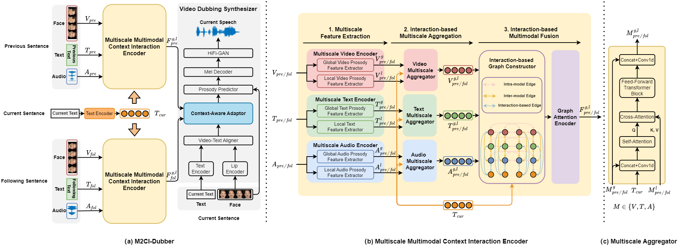

ABSTRACT
Automatic Video Dubbing (AVD) generates speech
aligned with lip motion and facial emotion from scripts. Recent
research focuses on modeling multimodal context to enhance
prosody expressiveness but overlooks two key issues: 1) Multiscale prosody expression attributes in the context influence
the current sentence’s prosody. 2) Prosody cues in context
interact with the current sentence, impacting the final prosody
expressiveness. To tackle these challenges, we propose M2CIDubber, a Multiscale Multimodal Context Interaction scheme
for AVD. This scheme includes two shared M2CI encoders to
model the multiscale multimodal context and facilitate its deep
interaction with the current sentence. By extracting global and
local features for each modality in the context, utilizing attention-based mechanisms for aggregation and interaction, and employing an interaction-based graph attention network for fusion,
the proposed approach enhances the prosody expressiveness
of synthesized speech for the current sentence. Experiments
on the Chem dataset show our model outperforms baselines
in dubbing expressiveness. The code and demos are available at https://github.com/XiaoYuanJun-zy/ICASSP2025-M2CI-Dubber.
MODEL ARCHITECTURE

Figure: The proposed M2CI-Dubber contains two shared Multiscale Multimodal Context Interaction Encoders, a Text Encoder, and a Video Dubbing Synthesizer.
EXPERIMENTS
Baselines:
1) FastSpeech2 : a neural text-to-speech model.
2) DSU-AVO an AVD model whose learning objective is discrete speech unit prediction.
3) HPMDubbing an AVD model incorporating hierarchical prosody modeling by considering the current sentence’s face frames.
4) MCDubber an AVD model incorporating temporally concatenating the multimodal context.
| Ground-Truth | Mel Resynthesis | FastSpeech2 | DSU-AVO | HPMDubbing | MCDubber | M2CI-Dubber |
|---|---|---|---|---|---|---|
|
Previous sentence: Let's look at both thermodynamic and kinetic influences on a chemical reaction. Current sentence: So here's a simple chemical reaction, A going to B. Following sentence: And this is an elementary chemical reaction, which means what I've written here is actually what happens on a molecular level. |
||||||
| Current sentence: So here's a simple chemical reaction, A going to B. | ||||||
| Ground-Truth | Mel Resynthesis | FastSpeech2 | DSU-AVO | HPMDubbing | MCDubber | M2CI-Dubber |
|---|---|---|---|---|---|---|
|
Previous sentence: Well, thermodynamics applies at equilibrium. Current sentence: At equilibrium, the rate of the forward reaction and the rate of the reverse reaction are the same. Following sentence: That defines our equilibrium. |
||||||
|
Current sentence: At equilibrium, the rate of the forward reaction and the rate of the reverse reaction are the same. |
||||||
| Ground-Truth | Mel Resynthesis | FastSpeech2 | DSU-AVO | HPMDubbing | MCDubber | M2CI-Dubber |
|---|---|---|---|---|---|---|
|
Previous sentence: They can add together. Current sentence: The amplitude of a wave function can increase when electrons get close to each other. Following sentence: The amplitude increasing leads to a higher probability of finding electrons. |
||||||
|
Current sentence: The amplitude of a wave function can increase when electrons get close to each other. |
||||||
| Ground-Truth | Mel Resynthesis | FastSpeech2 | DSU-AVO | HPMDubbing | MCDubber | M2CI-Dubber |
|---|---|---|---|---|---|---|
|
Previous sentence: Let's look at the sublimation of iodine solid to form iodine gas that's occurring right here in front of me. Current sentence: What I have for you is, I'm going to raise the temperature of the system. Following sentence: What happens to the color intensity of the iodine gas as the temperature is increased? |
||||||
|
Current sentence: What I have for you is, I'm going to raise the temperature of the system. |
||||||